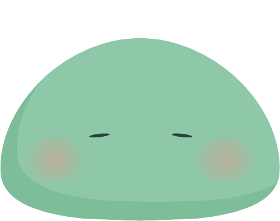
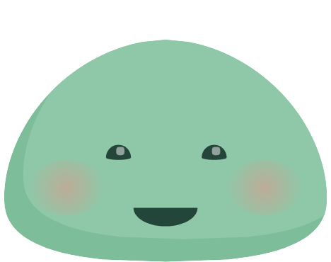
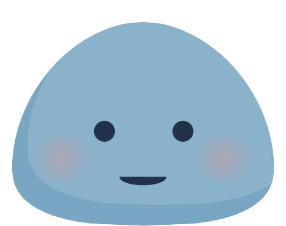
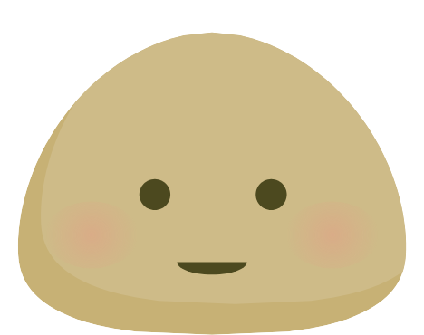
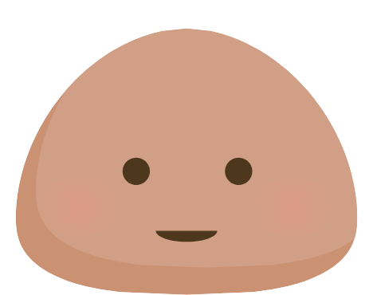
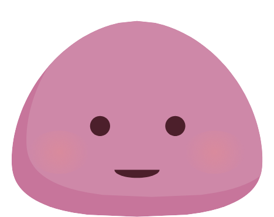
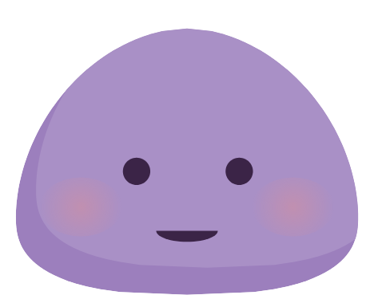
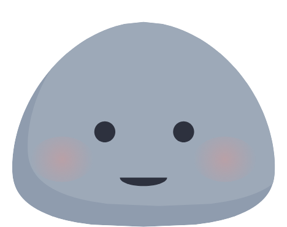

mochi
A small companion who lives on your desktop and talks back.
In development · not yet released
She is simply there
She sits above your other windows without taking the dock or stealing focus. The pointer only lands on her where she is actually drawn; everywhere else it passes straight through, so she cannot get in the way of what is underneath.
Speech, not typing
A keystroke wakes her and you talk. She listens and answers out loud, aiming for under a second between your last word and her first. You can interrupt her mid-sentence, the way you would interrupt anybody.
A session, end to end. Each of these is a face the app actually assigns — not a flattering pose picked out of the expression table.
-

asleep - waking
- talking
-

saying goodbye
More than one of her
A persona is a whole character you can swap: her name, her voice, her colour, what she calls you, the prompt that makes her who she is, and what she says arriving and leaving. Switch from the tray and she is somebody else — a language tutor, a companion, whatever you write.
-

-

-

-

-

-

-

The rest of it
-
She remembers
Every wake is a fresh session, so memory is an explicit note you can read, edit and delete — not something accumulating invisibly in a context window.
-
It stays on your machine
Conversations are written locally and kept until you delete them — one at a time, or all of them. Or not written at all.
-
She can go and look
Press ⌃⇧K and ask. She reads a fixed workspace folder and, when the question needs it, the web — then tells you in her own words. Read-only: she cannot change a file.
-
Your subscription, your bill
She runs on your own ChatGPT subscription, borrowing the credential from the Codex CLI you are already signed in to (
~/.codex/auth.json). There is no server of ours in between, and no separate API key to buy.
Where this actually is
Plainly, rather than as a roadmap.
- Platform
- macOS on Apple Silicon. Windows has run once; that is not the same as supported.
- Download
- None yet. Builds are signed, but notarization is deliberately not run — that step uploads the binary to Apple, and it is a decision rather than a build step.
- You need
- Your own OpenAI API key, and a microphone.